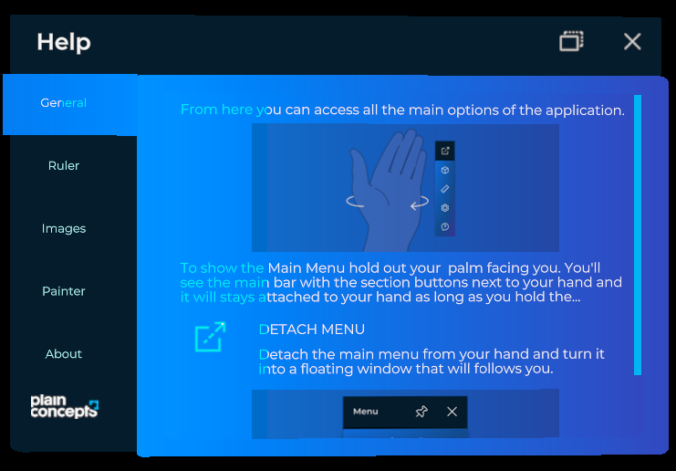

Tabs control

The tabs control arranges content in tabbed panels: a row of tab buttons and a container that shows the content of the selected tab. XRV uses it in the settings and help windows, and you can use it in your own windows.
Create a tab control
Build the control with TabControl.Builder, a TabControlBuilder that XRV creates when you call XrvService.Initialize. It returns an entity that you can add to the scene or use as window contents.
using Evergine.Framework;
using Evergine.Mathematics;
using Evergine.Xrv.Core.UI.Tabs;
public class TabsSample : Component
{
protected override void Start()
{
base.Start();
Entity tabs = TabControl.Builder
.Create()
.WithSize(new Vector2(0.3f, 0.2f))
.AddItem(new TabItem
{
Name = () => "General",
Contents = this.CreateGeneralContents,
})
.AddItem(new TabItem
{
Name = () => "Advanced",
Contents = this.CreateAdvancedContents,
})
.Build();
this.Managers.EntityManager.Add(tabs);
}
private Entity CreateGeneralContents() => new Entity("General contents");
private Entity CreateAdvancedContents() => new Entity("Advanced contents");
}
TabControlBuilder method |
Description |
|---|---|
Create() |
Starts a new tab control. |
WithSize(Vector2 size) |
Sets the size of the control. |
AddItem(TabItem item) |
Adds one tab. |
AddItems(IEnumerable<TabItem> items) |
Adds several tabs. |
WithActiveItemTextColor(Color color) |
Sets the text color of the selected tab. |
WithInactiveItemTextColor(Color color) |
Sets the text color of the other tabs. |
Build() |
Returns the entity of the tab control. |
If the tab control is the only content of a window, use the TabbedWindow class instead. The settings and help windows are tabbed windows, and their Tabs property gives you their list of tabs.
TabControl properties
| Property | Default | Description |
|---|---|---|
Size |
(0.3, 0.2) |
Size of the control, in meters. |
Items |
empty | The tabs of the control. Add or remove TabItem objects to change them. |
SelectedItem |
The selected tab. Setting it shows its content. | |
MaxVisibleItems |
null |
Maximum number of tab buttons shown at once. null shows all of them. |
DestroyContentOnTabChange |
false |
Destroys the content of a tab when the user selects another one. Otherwise the content is kept and reused. |
OverrideThemeColors |
false |
Uses ActiveItemTextColor and InactiveItemTextColor instead of the theme colors. |
ActiveItemTextColor |
Text color of the selected tab when OverrideThemeColors is true. |
|
InactiveItemTextColor |
Text color of the other tabs when OverrideThemeColors is true. |
The SelectedItemChanged event is raised when the selected tab changes. Its arguments include the new Item.
Tab items
TabItem describes a tab and its content.
| Property | Type | Description |
|---|---|---|
Name |
Func<string> |
Returns the tab title. Using a function lets the title follow localization changes. |
Contents |
Func<Entity> |
Returns the entity shown when the tab is selected. The control calls it when it needs the content. |
Order |
int |
Position of the tab. Lower values come first. |
Data |
object |
Any data you want to associate with the tab. |
Id |
Guid |
Read-only. Unique identifier generated when the item is created. |